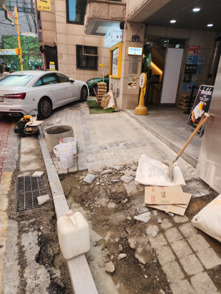

주차금지봉 설치
지정 주차면에 맞는 위치와 잠금 방식으로 설치합니다.


화성시 기안동 주차금지봉 상담
지정 주차면의 무단 주차를 방지하도록 돕습니다.

차량이 드나드는 높이에 맞춰 잠금식 주차금지봉을 설치합니다.바닥 상태에 맞춰 앙카로 고정하며, 파손된 제품만 부분 교체할 수도 있습니다.
주차금지봉 시공 전·후 사진을 살펴보세요.
지정 주차면에 맞는 위치와 잠금 방식으로 설치합니다.

어떤 작업을 하나요?
지정 주차면의 무단주차를 막고 필요할 때 접어서 사용할 수 있는 제품을 설치합니다.
자물쇠로 잠그는 방식 등 사용하기 편한 잠금 구조를 선택할 수 있습니다.
바닥 재질에 맞춰 단단히 고정하며, 파손된 제품은 필요한 수량만 교체합니다.
주차금지봉이 휘었거나 잠금장치가 고장 났다면 파손된 제품만 교체하는 작업도 가능합니다.
설치·부분 교체 상담
현장 전체와 설치할 곳의 사진, 필요한 제품과 수량을 보내주세요. 설치부터 부분 교체까지 원하는 작업에 맞춰 상담해 드립니다.야간·주말 일정도 현장에 맞춰 상담합니다.
접이식 주차금지봉은 지정 주차면을 관리하고 필요할 때 차량 출입을 조절할 수 있습니다.
상가 앞이나 전용 주차공간에서 무단주차를 막는 데 도움이 됩니다.
주차할 때 낮추고 필요할 때 세울 수 있는 제품으로 출입을 관리합니다.
잠금 방식과 차량 하부 간섭을 고려해 주차봉의 높이와 고정 위치를 정합니다.
바닥 상태에 맞춰 앙카로 고정하며, 파손 제품도 필요한 수량만 교체할 수 있습니다.
같은 지역의 다른 작업
다른 시공항목도 함께 살펴보세요.화성시 기안동 시공 안내로 이동합니다.
 볼라드같은 지역 시공 안내 보기 →
볼라드같은 지역 시공 안내 보기 → 논슬립패드같은 지역 시공 안내 보기 →
논슬립패드같은 지역 시공 안내 보기 → 반사경같은 지역 시공 안내 보기 →
반사경같은 지역 시공 안내 보기 → 아스콘부분보수같은 지역 시공 안내 보기 →주차금지봉현재 보고 계신 시공 안내
아스콘부분보수같은 지역 시공 안내 보기 →주차금지봉현재 보고 계신 시공 안내 차량진입판같은 지역 시공 안내 보기 →
차량진입판같은 지역 시공 안내 보기 → 카스토퍼같은 지역 시공 안내 보기 →
카스토퍼같은 지역 시공 안내 보기 → 코너보호대같은 지역 시공 안내 보기 →
코너보호대같은 지역 시공 안내 보기 → 차선규제봉같은 지역 시공 안내 보기 →
차선규제봉같은 지역 시공 안내 보기 → 표지판설치같은 지역 시공 안내 보기 →
표지판설치같은 지역 시공 안내 보기 →다른 지역의 설치·교체 작업도 편하게 문의해 주세요.